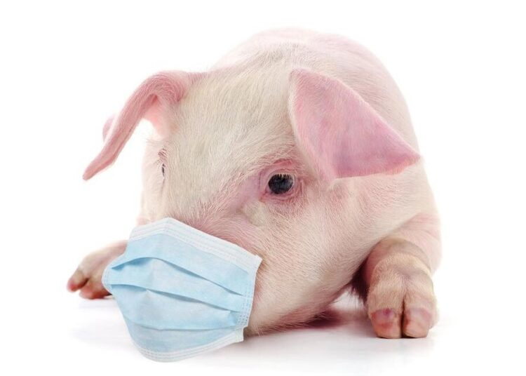

Цей вірус порівняно молодий. Вперше про нього стало відомо в 2009 році, коли серед домашніх свиней на території Мексики (США) були виявлені хворі тварини. Вірус також передається повітряно-крапельним шляхом і через особисті речі хворого. Найбільш небезпечні для людини ускладнення, викликані цим вірусом. Епідемія свинячого грипу торкнулася 214 держав, і забрала понад 18 000 людських життів.
